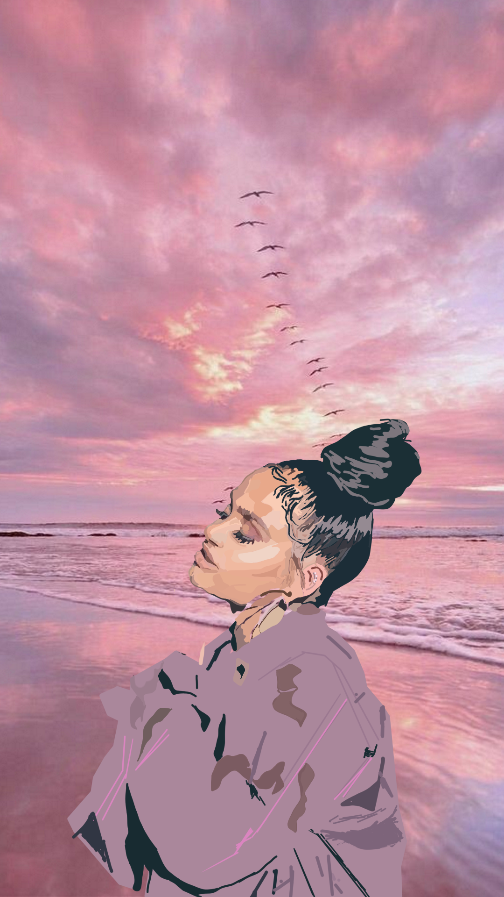

Digital Artworks I Find Interesting
Name of Art: Gender-Based Violence in South Africa by Luyanda Sade

Meaning Behind The Artwork:
This artwork is dedicated to the victims of gender based violence in South Africa. Although this is not all of the victims this artwork was created in June 2020 and it represents women in South Africa being endangered. The red line painted in the woman's face represents no identity instead she represents all women. The names are written all over her body and the background represents the random places the victims were found. The BLM tattoo represents the Black Lives Matter movement and black bodies.
Name of Art: Before Love Came To Kill Us by Luyanda Sade

Meaning Behind The Artwork:
This artwork is inspired the musician Jessie Reyez who released an album called "Before Love Came To Kill Us" this music inspired the artist when the artist was in a dark place that is too personal to explain or talk about. The album speaks of love and loss as well as having very dark visuals which inspired the theme of the artwork. The butterflies represent freedom. The eyes represent wanting to forget.
Name of Art: Sad Generation by Luyanda Sade
Meaning Behind The Artwork:
This artwork represents this generation also known as the Sad Generation that has everything from opportunities and choices and more freedom expression as well as social media. But this generation is known as the Sad Generation because we look happy in pictures but many of our generation suffers from depression, anxiety and suicidal thoughts.
Name of Art: Poetic Justice by Luyanda Sade
Meaning Behind The Artwork:
This artwork represents the nostalgia of black love from the 90s that is aesthtically pleasing for this generation because of the differences between idealistic love and the toxic love and relationships this generation glorifies. This artwork is the opposite of the idea of glorifying toxic relatioships.
Name of Art: Black Girl Magic by Luyanda Sade

Meaning Behind The Art:
This artwork is inspired by the song by Tupac called The Rose That Grew From Concrete. This song and black girls embracing their nature and natural state. It is also inspired by the Future Is Female slogan.
Name of Art: Black Alice In Wonderland by Luyanda Sade
Meaning Behind The Art:
This artwork represents the artist's mind and how the artist is inspired by the Tim Burton version of the original fairytale, Alice In Wonderland
Name of Art: While We Wait By Luyanda Sade
Meaning Behind The Art:
This artwork was inspired when the artist was listening to one of Kehlani's albums when she was feeling emotional.
Artist's Instagram Handle: @sadeartstudio_
For more information on this artist check out her art account on instagram
Favorite Artists and Artworks
My favorite artists are Van Gogh and Michealangelo.
My favourite artwork by Van Gogh is Starry Night, that painting has a very mysterious yet calming effect on me. I'm obsessed with the beautiful patterns and the different shades of blue. My favourite artworks by Michealangelo are the Pietta and the Madonna of Bruges. This is because I was raised in a very religious household and although I dont see myself as an extremely religious person I like the beauty of these sculptures and the extremely detailed features. I'm a Roman Catholic and we believe in prayering the rosary which is used to pray to Mary so she can talk to Jesus about our prayers. These sculptures remind of my religion but also give me faith in God and I've been interested and amazed by renaissance art. That's because I believe the Renaissance Era was an Era where artists were allowed to express themselves and experiment with different colours and mediums. Personal Thought: I always wondered if women in the Renaissance Era were allowed to be painters or did society suppress them and only saw women as the muses for male painters. I also wonder if history has hidden many talented female artists.
My Own Painting
This is a painting I did during my spare time to relax from stress of work and school. The goal was to painting something relaxing and feminine - Nandipha Zulu.
My Bucket List
1. Ride a Jetskii 2. A Dream Vacation in Bali or Jamacia I like beautiful islands with beaches 3. Go to a music festival or a Rihanna concert but she hasn't released music in years. 4. Visit the Lourve Museum in Paris,France and see the Mona Lisa. 5. Visit the Pyramids of Giza and see actual Egyptian statues. 6. Go to Mexico and learn about their culture and stories. 7. Visit Greece to see greek statues and stay in Santantori. 8. Visit Rome so I can see the Vatican, Roman Artworks and statues. 9. Go to Bali for vacation. 10. Go to Japan and visit the animation studioes and watch how they work on the animation series.
My Favorite Social Platforms
I usually use Instagram because I think it is the best platform to post and search for artworks and discover new artists that use different mediums. by mediums I mean paint, pen, pencil, digital illustrations and other mediums. I use Twitter to catch up with news, twitter is basically my version of the news I dont tweet but I retweet a lot of things I like. My instagram handle is @NandiTheZuluQueen and my Twitter handle is @QueenNandi
Favourite Foods
My favorite home cooked meals are Creamy Garlic Shrimp Pasta and Bacon wrapped potatoes. My favorite dessert is home made brownies with vanilla ice cream. My favorite fast food restaurants has to be Ocean Basket and MacDonalds. My favorite Asian restaurant in Johannesburg is Saigon Suzy in Parkwood. I highly recommend this restaurant if you are interested in eating different Asian food including Korean KFC burgers and Bun Chai which a bowl of noodles, salad and different types of meats, it's amazing. Another meal I would like to recommend that I tried last week is Pesto Pasta.
My Secret Tattoos
Like I said the About Section. I am obsessed with tattoos. I actually have tattoos that you cant see unless I wear vests or skirts. That's why I call them secret tattoos because they are hidden. My first tattoo is a butterfly on my thigh. My second tattoo is a red rose. Fun Fact: These tattoos symbolise people in my life who are no longer on this earth.
Favorite types of Books
I usually enjoy reading mangas and books that have adventure and where the girl is the main character. I grew up enjoying reading books where the girl is the main character because these books felt relatable. I love reading books by P.C Cast especially the Goddess series, my favorite book is Goddess of Troy by P.C Cast. I think I relate or like these type of books because goddesses have more power than men in these series. Another book series I was obsessed with was the Starcrossed series by Josephine Angelini. There are three books in the series and I recommend it to anyone interested in Greek Mythology and fiction. Even the Goddess series by P.C Cast includes goddesses from different cultures as P.C Cast gives them their adventures and how they work with humanity to restore peace. Another series by P.C Cast I recommend to people if your's interested in vampires is the House of Night series. Really interesting and bit addicting.